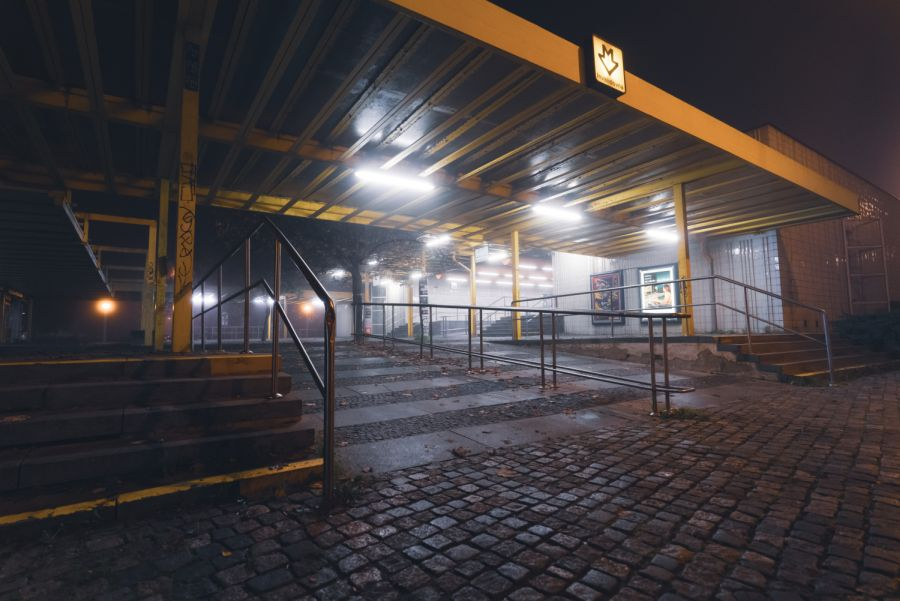

Pražské metro je velmi zajímavou a jedinečnou součástí města.
Zde je několik zajímavostí:
První linka metra v Praze byla otevřena v roce 1974.
Celkem má Pražské metro tři linky a 61 stanic.
Většina stanic metra v Praze je zdobena uměleckými díly.
Tyto dekorace jsou odlišné na každé stanici,
což dává každé z nich jedinečnou atmosféru.
Nejdelší tunel metra v Praze je mezi stanicemi Náměstí Republiky a Můstek na lince B.
Měří celkem 2,7 km.
V metru v Praze můžete vidět mnoho zajímavých architektonických prvků,
jako jsou například železné sloupy, které jsou zavěšeny na stropě.
Tyto sloupy jsou typické pro Pražské metro a dodávají mu jedinečnou atmosféru.
Pražské metro je také velmi spořádané. Všechny vlaky odjíždějí přesně v sekundě
a dodržování jízdního řádu je přísně kontrolováno.
Mezi zajímavé faktory patří i to, že Pražské metro bylo v minulosti využito
k natáčení filmů a reklam. Například v americkém filmu
Mission: Impossible se objevuje pražské metro jako kulisa.
Kromě toho, Pražské metro je velmi důležitou součástí dopravního systému v Praze.
Každý den přepravuje tisíce lidí po celém městě.

Pár faktů a rekordů
Jedná se o tzv. „těžké“ metro sovětského typu se snahou o dosažení co největší kapacity.
Nejdelší eskalátor se nachází ve stanici Náměstí Míru a má 87,2 m.
Nejhlouběji položenou stanicí je Náměstí míru, které leží v 53 m.
V roce 2013 metro přepravilo 584 milionu cestujících - 1,6 milionu denně.
Celková délka sítě je 65,2 km.
Nejdelší vzdálenost mezi dvěma stanicemi je 2748 metrů (Kobylisy - Nádraží Holešovice).
Nejkratší vzdálenost je mezi stanicemi Muzeum a Hlavní nádraží - 425 m.